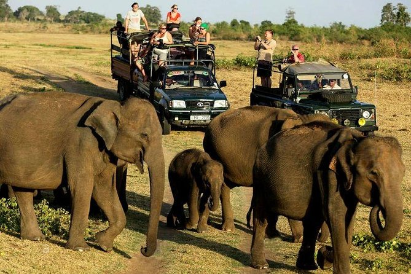
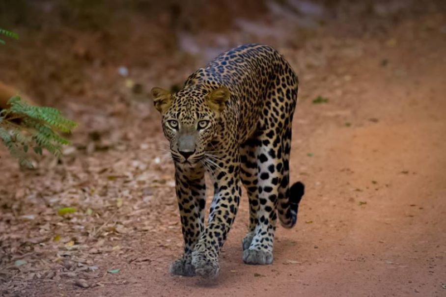
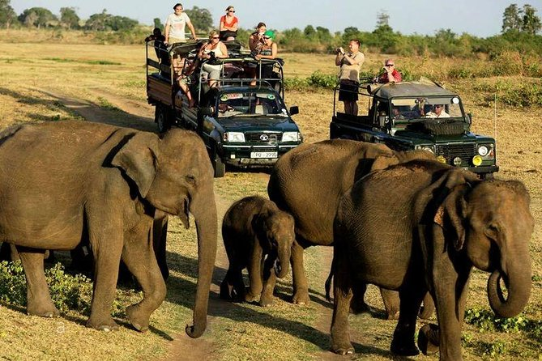
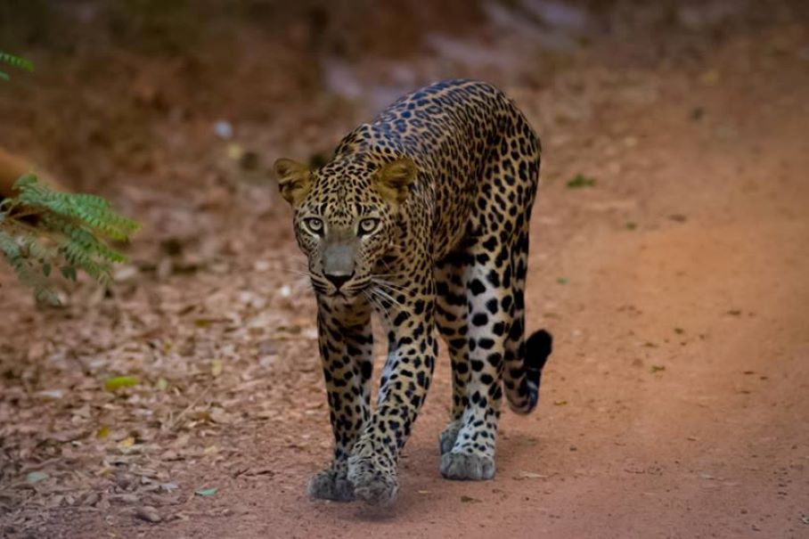

Experience the Safari
 




| Yala National Park | Udawalawe National Park | Wilpattu National Park | Bundala National Park |
Yala National Park is the ultimate destination for wildlife safaris in Sri Lanka. Located in the island’s southeastern region, this stunning reserve is home to the world's highest density of leopards, large herds of elephants, sloth bears, crocodiles, and over 200 species of birds.
Experience the Magic of Yala with Us....There are 3 options
Udawalawe National Park is one of the most famous and greatest among all national parks in Sri Lanka. This is an important protected area that is home to a considerable flora and fauna and also it is an important habitat for Sri Lankan elephants and aquatic birds. The park is 165 kilometers [103mi] away from Colombo. The total extent of the Udawalawe National Park is 30,821 hectares [119 sq mi] including the water reservoir, which covers 3405 hectares at full capacity.
Experience the Magic of Udawalawe with Us....There are 3 options
Wilpattu was declared a National Park in 1938 under the Fauna and Flora Protection Ordinance and is managed by the Department of Wildlife Conservation.
The Park and the surrounding areas are vital for protecting a good sample of biodiversity, that unique to Sri Lanka.
Experience the Magic of Wilpattu with Us....There are 3 options
Bundala National Park is an internationally important wintering ground for migratory water birds in Sri Lanka. Bundala harbors 197 species of birds.In 2005 the national park was designated as a biosphere reserve by UNESCO, the fourth biosphere reserve in Sri Lanka.The national park is situated 245 kilometres (152 mi) southeast of Colombo.
Experience the Magic of Bundala with Us....There are 3 options